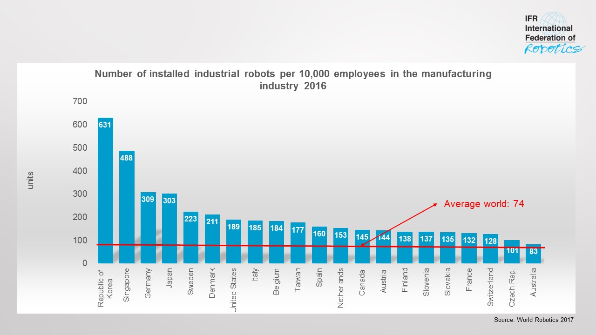

3.1 Reading: Robot Density Rises Globally
The automation of production is accelerating around the world. 74 robot units per 10,000 employees is the new average of global robot density in the manufacturing industries (2015: 66 units). By regions, the average robot density in Europe is 99 units, in the Americas 84 and in Asia 63 units.
 The 2017 World Robot Statistics, issued by the International Federation of Robotics (IFR)
“Robot density is an excellent standard for comparison in order to take into account the differences in the automation degree of the manufacturing industry in various countries,” says Junji Tsuda, President of the International Federation of Robotics. “As a result of the high volume of robot installations in Asia in recent years, the region has the highest growth rate. Between 2010 and 2016, the average annual growth rate of robot density in Asia was 9 percent, in the Americas 7 percent and in Europe 5 percent.”
Source: Adapted from the article “Robot density rises globally” (IFR 2018).
- In 2017, what is the average of global robot density in the manufacturing industries?
- Is it higher or lower that that of 2015?
- Which continent has the highest average robot density?
- Accoriding to the 2017 World Robot Statistics, what is the most automated country in the world?
- Between 2010 and 2016, was the average annual growth rate of robot density in Asia 7 percent?
Show/Hide solution
- 74 per 10,000 employees; 2. Higher; 3. Europe; 4. Republic of Korea; 5. No, 9 percent.
- Republic of Korea